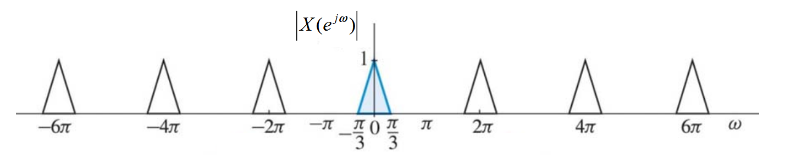
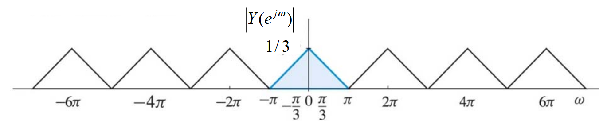
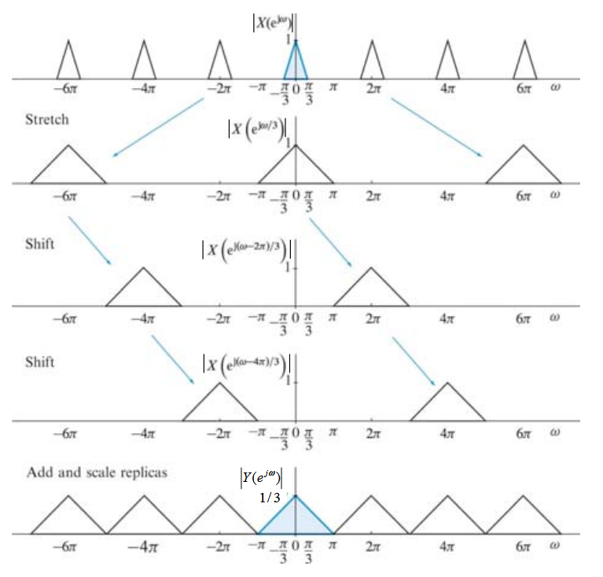

flowchart LR A($$x_n$$) --> B[$$\downarrow$$ M] B --> C($$y_n$$)
Ideas collection for decimatior section
Down sampling
Downsampling by factor M such that I/O-relation is \(y[n] = x[nM]\). In MATLAB, this can be achieved by using the function \(\textcolor{red}{downsample(x,M)}\) which downsamples an arbitrary input function \(x[n]\) by a factor of \(M\).
With input sampling rate \(F_T = 1/T\), the output sampling rate \(F_M\) is given by
\[\begin{equation} F_M = \frac{1}{T_M} = \frac{1}{MT} = \frac{F_T}{M}. \end{equation}\]
Thus, the sampling rate is decreased by a factor of \(1/M\) while the sampling period is increased by the downsampling factor \(M\).
The frequency-domain relation of \(y[n] = x[nM]\) can be derived by taking the z-transform
\[\begin{equation} Y(z) = \sum_{\infty}^{\infty}x[Mn]z^{-n} \end{equation}\]
and with some fancy math (explained here https://wolter.hs-bremen.de/skripte/DSP_II/SKRIPT_DSP_II.pdf), the final form
\[\begin{equation} Y(z) = \frac{1}{M}\sum_{k = 0}^{M-1}X(z^{1/M}W_M^k),\ W_M^k = e^{-\frac{j1\pi k}{M}} \end{equation}\] is obtained. This implies that the output spectrum is the sum of M stretched and shifted replicas of the input spectrum, scaled by a factor of 1/M. The output spectrum of a factor-of-M downsampler is given by
\[\begin{equation} Y(e^{j\omega}) = \frac{1}{M}\sum_{k = 0}^{M-1}X(e^{-j(\omega-2\pi k)/M}). \end{equation}\]
Aliasing in the output spectrum \(Y(e^{j\omega})\) is absent if and only if
\[\begin{equation} X(e^{j\omega}) = 0,\ \pi/M \leq |\omega| \leq \pi \end{equation}\] meaning \(x[n]\) must be band-limited to \(\pm \pi/M\).
As an example, see the figures of a factor-3 downsampler below  
with the mathematical representation
\[\begin{equation} Y(e^{j\omega}) = \frac{1}{3}\{ X(e^{j\omega /3}) + X(e^{j(\omega -2\pi)/3}) + X(e^{j(\omega -4\pi) /3})\} \end{equation}\]
meaning the following steps are being done
1. Stretch X(e^{j}) by a factor of 3 to obtain \(X(e^{j\omega /3})\) so the input spectrum is widened
2. Create a and shift 2 copies of \(X(e^{j\omega})\) cebtered at the frequencies \(\omega = 2 \pi k,\ k = 1,2\)
3. Add the strechted and shifted replicas and scale the sum by 1/3 to obtain \(Y(e^{j\omega})\)

This shows the importance of proper filtering!
Up sampling
Basically the same as downsampling
flowchart LR A($$x_n$$) --> B[$$\uparrow$$ L] B --> C($$y_n$$)
\(\textcolor{red}{TBC}\)
Cascade structures
Up- and downsamplers can be cascaded to obtain a rational conversion factors.
flowchart LR A($$x_n$$) --> B[$$\uparrow$$ L] B --> C[$$\downarrow$$ M] C --> D($$y1_n$$)
flowchart LR A($$x_n$$) --> B[$$\downarrow$$ M] B --> C[$$\uparrow$$ L] C --> D($$y2_n$$)
This cascading is interchangable with no change to the I/O-relation \[\begin{equation} y_1[n] = y_2[n] \end{equation}\] if and only if M and L are relatively prime, meaning M and L do not have any common factor that is integer k > 1.
Multirate identity
The two multirate identities for up/down sampling and filtering are
Identity #1 \[\begin{equation}
Y_1(z) = H(z)\frac{1}{M}\sum_{k=0}^{M-1}X(z^{1/M}W_M^k)
\end{equation}\] i.e., we can interchange the order of down-sampling and filtering, if we down-sample the filter response
and Identity #2 \[\begin{equation}
Y_2(z) = H(z^L)X(z^L)
\end{equation}\] i.e., we can interchange the order of up-sampling and filtering, if we up-sample the filter response
Decimators and interpolators
Prior to down-sampling a signal v[n] must be band-limited to \(|\omega| < \pi/M\) to avoid aliasing. This can be done with an additional LP filter \(H_d(z)\) called the decimation filter
flowchart LR A($$x_n$$) --> B[$$H_dz$$] B --> |$$v_n$$| C[$$\downarrow$$ M] C --> D($$y_n$$)
This system is called a decimator.
Since up-sampling causes unwanted images in the spectrum of the up-sampled signal \(x_u[n]\), the unwanted images included in \(|\omega| > \pi/L\) must be removed using an additional LP filter \(H_u(u)\) called the interpolator filter
flowchart LR A($$x_n$$) --> B[$$\uparrow$$ M] B --> |$$x_un$$| C[$$H_uz$$] C --> D($$y_n$$)
This system is called a interpolator.
Now for some actual calculations
With the ADC specifications given on 28.11.2024 following
1. Dynamic range (DR) : 16bit ~ 98dB
2. Signal bandwidth (B/bw) : 215Hz
3. Nyquist Frequency (\(f_N\)) : 430Hz
4. Modulator order (L) : 2
5. Sampling frequency (\(f_s\)): 220kHz
6. Oversampling ratio (OSR) : \(M = \lceil \frac{f_s}{f_N}\rceil = 512\)